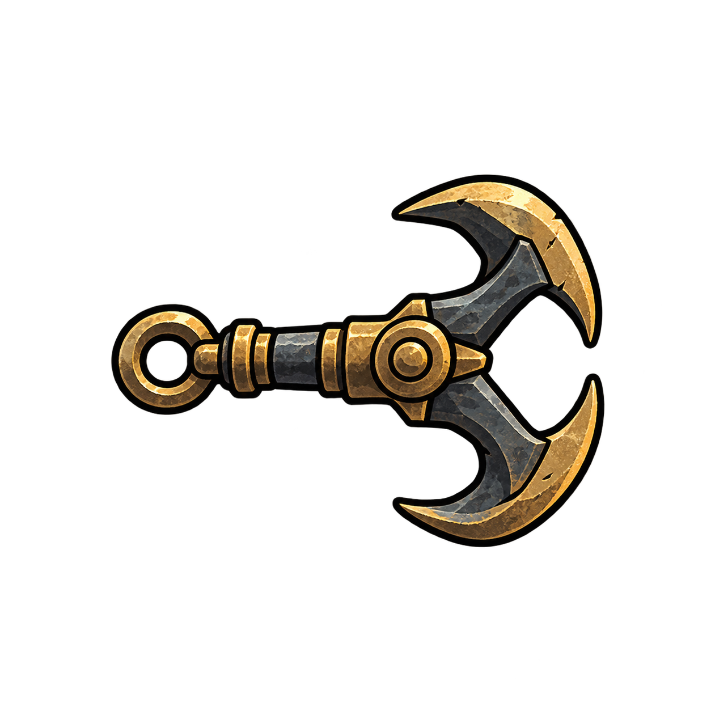
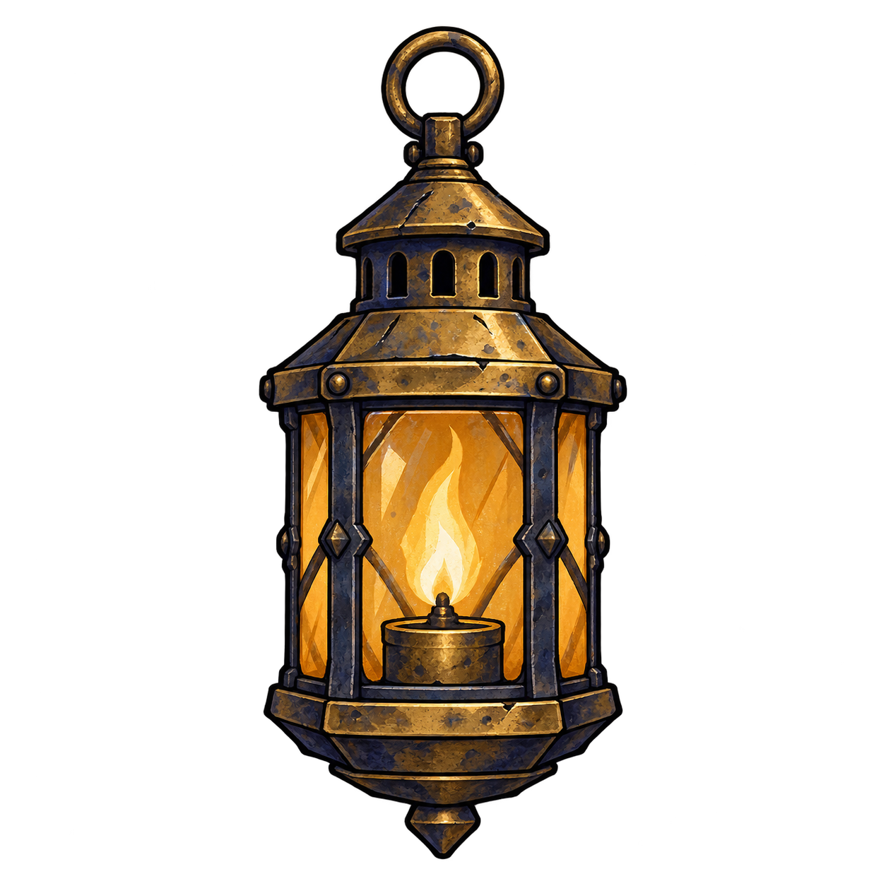

HOOK HAVOK / ART LAB 01
A little keeper. A long way down.
Belfry atmosphere, more places to land. A sprite-animation study—not a playable game.
Loading artwork…
Inspect the silhouette
What we are testing
Does the hood keep its shape? Do the feet stay on the baseline? Does the scarf distract at gameplay size?
This is a six-pose production trial: two idle poses and four run poses. It establishes an animation workflow, not final character approval.
Keyboard: tab through controls; space activates the focused button. Audio stays off in this study.
Source frames
Equipment & light

